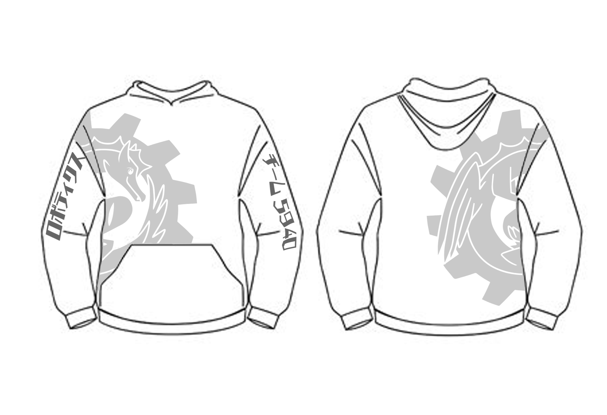
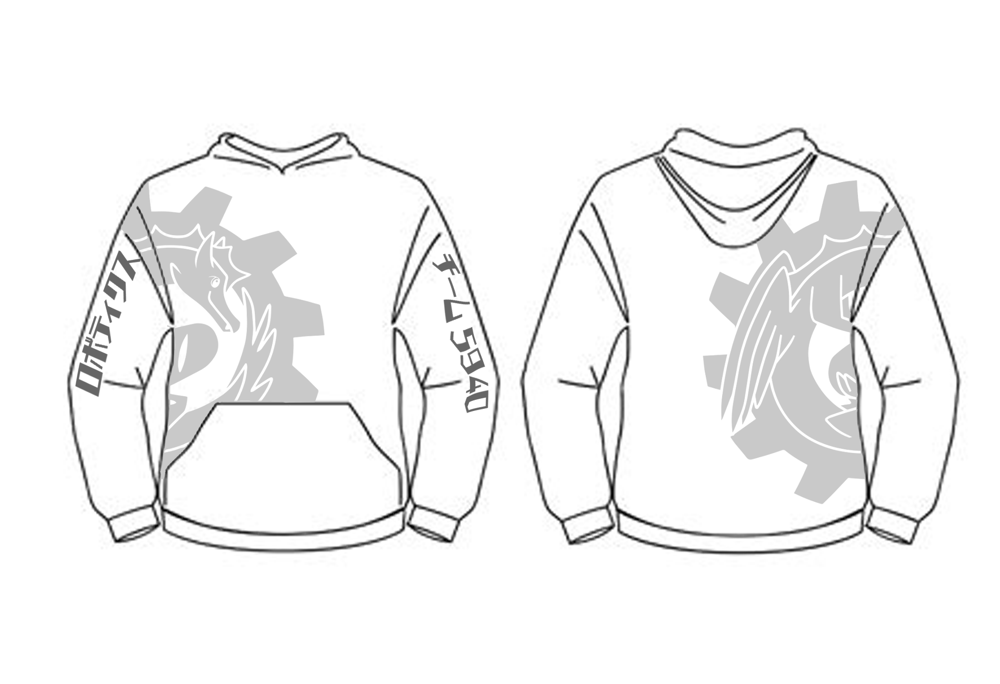

Ever since my freshman year, I have been a part of my school's FIRST Robotics Competition robotics team, titled "B.R.E.A.D." (or just "Bread"). I have been a part of the robotics CAD team for all four HS years, and on the Spirit team three years. (starting sophomore year)
Being on the CAD team, I have had a lot of experience with making 3D models and designing around technical limitations in SOLIDWORKS. For example, some of the CAD projects that I have been involved in include making the outer frame and bumpers of the robot, making an intake prototype, making a mechanism that will spin a wheel, and more.
Team 5940 Logo (now outdated as of March 1st, 2023)
Prototype Intake CAD Render
Robotics Intake Mechanism Diagram
Servo Mount Plate
As a part of BREAD's Spirit team, I have worked on some small creations such as stickers and pins, but the main focus of the Spirit team is working on the team's custom t-shirts. Each Spirit team member would create their own design and submit it to be voted on and chosen as the shirt we would produce. Although my design did not get picked, it was a ton of fun to work on, and overall being in the Spirit team has taught me a lot about graphic design--as well as the technical process of making a piece of merchandise and selling it.
Robotics Hoodie Designs
.png) 

Overall, being a part of Robotics was a lot of fun, inspiring in me a love of 3D modeling and introducing me to professional logo and merchandise design. I loved being a part of a giant team that went on to win many awards and compete at a higher and more professional level than I had ever seen.
Left: At a robotics competition (Nicolas: smiling on right) (12.14.2020)
Right: Robotics team huddle (Nicolas: blue mask on left) (5.15.2021)
During my freshman year, I collaborated with a large team to design, plan, & create a large-scale immersive art installation "CommuniTree" originally showcased at San Francisco Design Week (SF Design Week) (June 2019) & later revised and re-used for Oracle's Tech Fest (October 2019). This installation focused on a theme of community and was inspired by a grove of redwood trees, intertwined at their roots providing a supportive ecosystem of various plants and animals between them.
I worked on this project as part of my last "intersession" (2-week elective classes of the student's choosing, occurs 4 times during the school year) of freshman year. I also helped over the summer of early June before SF Design Week, and during the setup and showcase during Oracle Tech Fest in Oct. 28 and Oct. 30th.
During these work times, I helped our team ideate an installation fitting the theme "community". I also helped on both the Technology Team (Tech Team) and Tree Team.
On the Tech Team, I helped plan out several technological features of the installation, from motion-sensor activated string lights to a functioning animatronic owl using Arduino & servos. I also helped with wiring all these features together.
On the Tree Team, I helped construct & place bark on the trunks of the fake trees, and helped with fake cloud construction (made of translucent white fabric and large spherical paper lanterns) & placement.
0_Fkfdgf-lbROOU_ul.png)
An installation made during my Prototyping Survey class in my Freshman year. It features rows of colorful, spinnable wooden blocks strung across the wires of Design Tech High School's 2nd floor bridge. As an interactive piece, it is meant to be spun & slid across by students to create unique pixel-based designs. It also features a plaque stating the installation's purpose & intended method of interactivity.
This piece was initially inspired due to the lack of interactive art at Design Tech High School, only having static murals at the time.
Notably, this installation was featured in d.tech's 2018-2019 yearbook. Also -- although it was not planned to stay this long -- as of July 2025, this installation is still present at d.tech! (although the plaque has since been removed)
Self-created plaque that was posted next to the installation.

The d.fence installation @ d.tech (Design Tech High School)
The original color plan for the blocks. Each pixel represents one block. In the installation, they are spun between their front and back colors, and therefore appear random.
Left: Front-side block coloring plan. Depicts a koi fish, yin & yang symbol, and ocean waves.
Right: Back-side block coloring plan. Depicts a smaller koi fish circling in the middle of a pond.
.jpg)
This project required lots of planning to ensure the blocks would fit on the wire. In fact, for a batch of blocks I accidentally drilled into the wrong side, which is why some blocks have an exposed drilling hole. Furthermore, this project involved many repetitive tasks, including cutting the wood blocks, drilling the right size holes, coloring each block according to my color plan, and placing each block on the wire in its correct position.
If I ever come back to this project or made a new version, I would do several things to improve this. One, I would paint over the blocks fully and fill in any exposed drill holes. I would place small flat magnets on the top and bottom of each block so that they would attract each other and keep each other upright, instead of being top or bottom heavy and stay angled on the wire. If I was completely redesigning the installation from scratch, I would paint the blocks blue and orange, or black and white (one color on each side of a block), so that images could be made more easily. Although in its current state, I do appreciate the abstract and random nature of the color my varied color plan makes.
During my high school "design lab" class, I worked on a game-making project in a team of 5. Our goal was to create a Minecraft horror map with the unique mechanic of seeing with sound -- aka only in a 5-block radius around you. Although never finished, it helped me hone my collaboration skills and learn my love of telling stories through virtual worlds.
One of the first hallways the player will encounter on this floor. With shaders, it looks much scarier.
A broken elevator that hasn't been used in a long time. Looking up, you can see a large, dark shaft.
More features that can be found on this floor include a noxious gas leak, a large testing chamber, and a secret vent.


An overhead look at what the whole facility looks like. In the top right, you can see a WIP section for another floor of the facility.

A closer look into the second section of the facility -- which would actually be your true starting point for the whole map. Meant to keep you locked in, like a prison cell--but without actually looking like one.